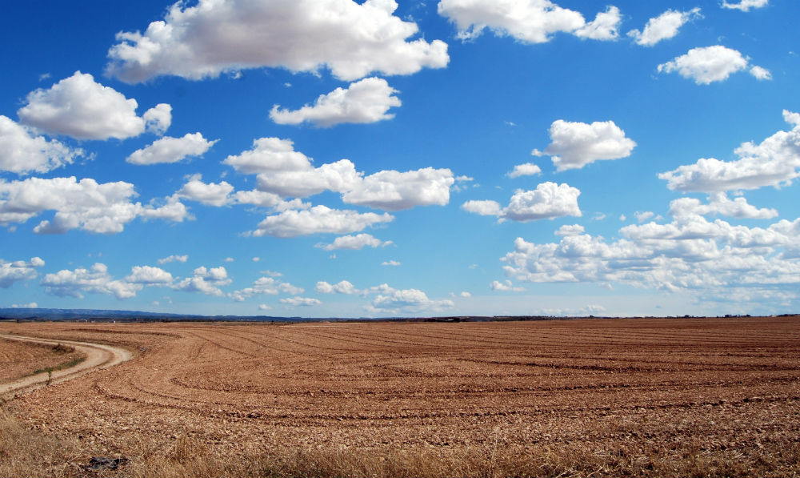
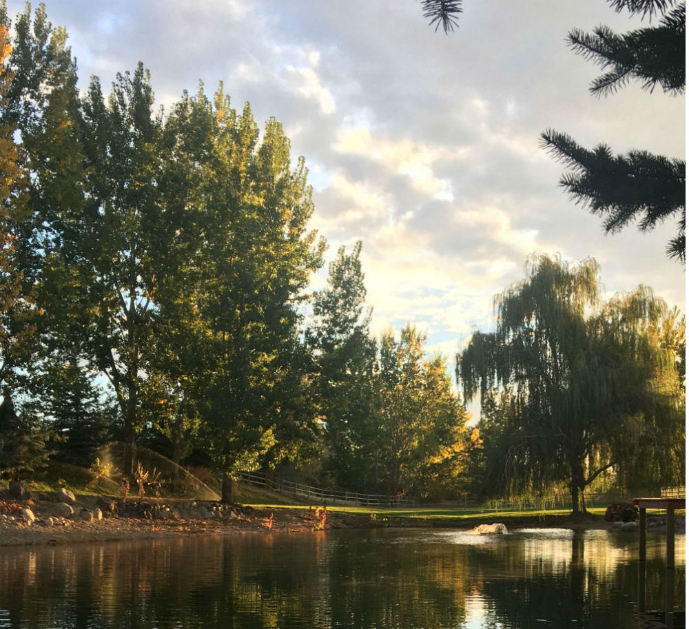
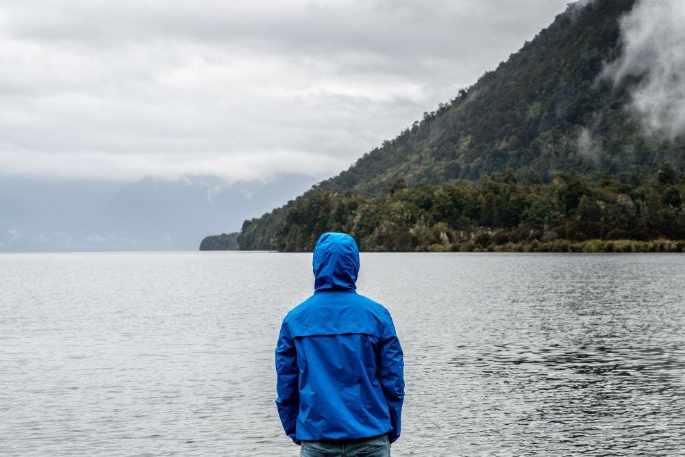
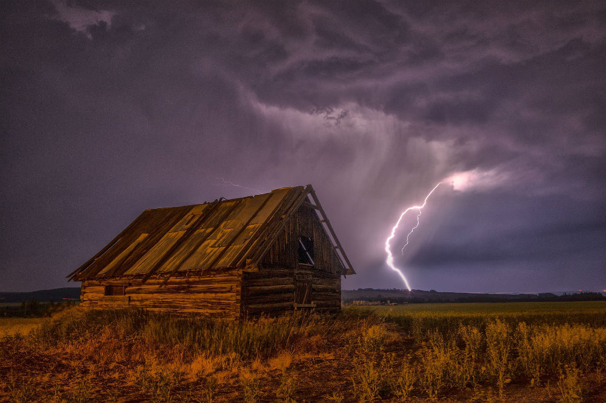
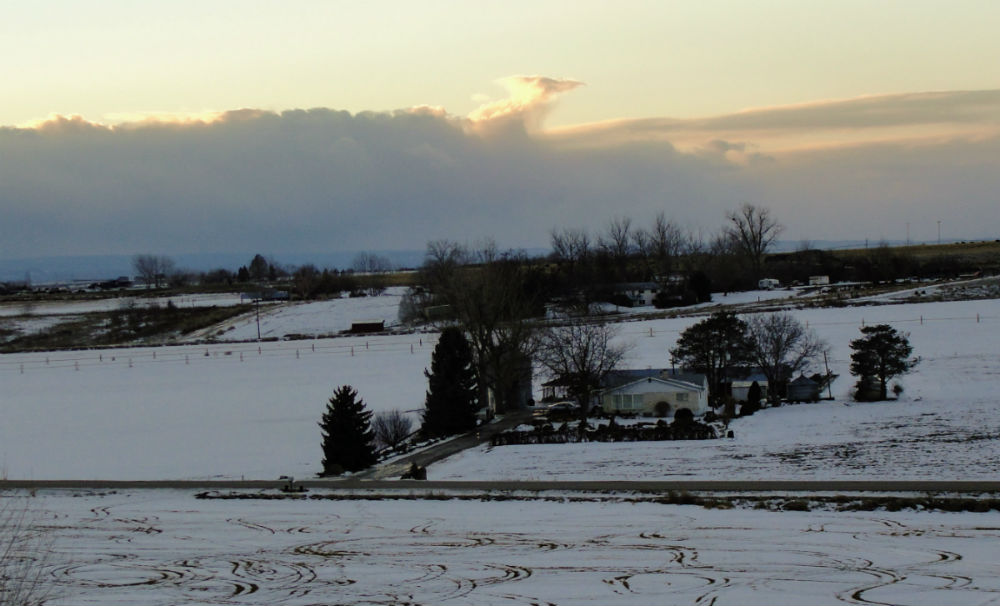

Forecast Trek
Weather for every hike!
≡Menu
Home
Preston
Soda Springs
Fish Haven
Storm Center
Gallery

Late Summer

Pond in late Fall Meridian, Idaho

Rain coming to Bear Lake
Light dusting of Snow in foothills.

Severe weather hit the Boise foothills.

Bitter tempatures with a light dusting of snow.